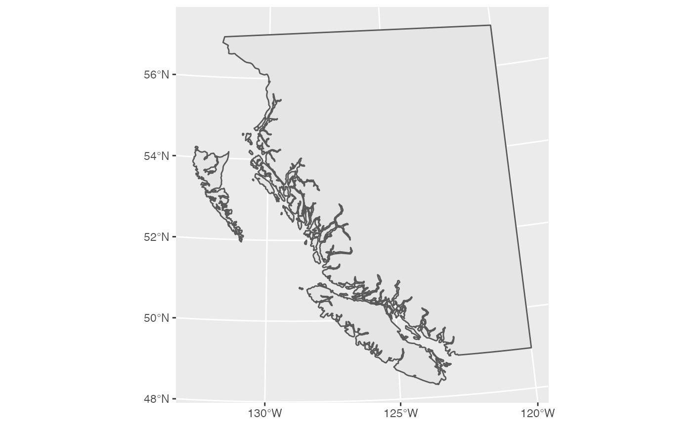
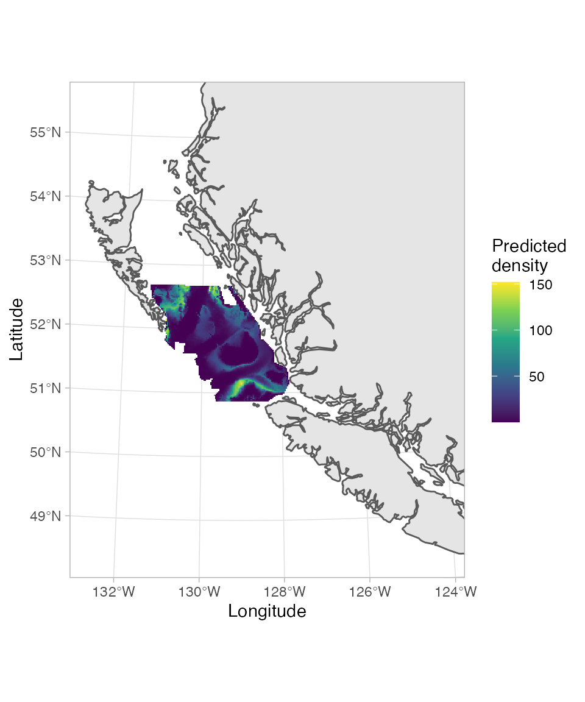

This vignette illustrates how to make gridded/raster maps of sdmTMB output (or gridded data from any source) on a base map of class sf.
First, we will download coastline data for our region. We will use a medium resolution version. For applied situations on finer scales, you may want to use scale = "large".
map_data <- rnaturalearth::ne_countries(
scale = "medium",
returnclass = "sf", country = "canada")
# Crop the polygon for plotting and efficiency:
# st_bbox(map_data) # find the rough coordinates
bc_coast <- suppressWarnings(suppressMessages(
st_crop(map_data,
c(xmin = -134, ymin = 46, xmax = -120, ymax = 57))))Transform our map into UTM 9 coordinates, which is the equal-area projection we fit in:
utm_zone9 <- 3156
bc_coast_proj <- sf::st_transform(bc_coast, crs = utm_zone9)If you don’t know the crs number (3156 above), you can look it up by googling it or looking on https://epsg.io/. For example, https://epsg.io/3156.
Look at our base map:

Now we will fit a model and predict on a grid. The coordinates X and Y are already UTM zone 9 coordinates (in km).
d <- subset(pcod, year == 2017)
pcod_spde <- make_mesh(d, c("X", "Y"), cutoff = 30)
m <- sdmTMB(density ~ 0 + depth_scaled + depth_scaled2,
data = d, spde = pcod_spde, family = tweedie(link = "log"))
p <- predict(m, newdata = qcs_grid)We can use sf::st_boundary() to help find reasonable limits on our map (output not shown):
sf::st_boundary(bc_coast_proj)Finally, we will combine our gridded predictions with the base map. We will multiply the X and Y columns by 1000 because we worked in UTM km for model fitting (to avoid computational issues with the scale of the range paramater):
ggplot(bc_coast_proj) + geom_sf() +
geom_raster(data = p, aes(x = X * 1000, y = Y * 1000, fill = exp(est))) +
xlim(230957.7, 1157991 - 300000) +
ylim(5366427, 6353456 - 200000) +
scale_fill_viridis_c() +
theme_light() +
labs(fill = "Predicted\ndensity") +
labs(x = "Longitude", y = "Latitude")